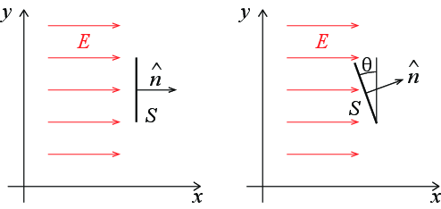

Et uniformt elektrisk felt er rettet langs \( x \)-aksen: \( \vec{E} = E_0 \x \).

Figuren til venstre viser en orientert overflate \( \vec{S} \).
a) Hva er fluksen gjennom denne overflaten?
\( E_0 S \)
Figuren til høyre viser en orientert overflate \( \vec{S} \) som har en vinkel \( \theta \) med \( y \)-aksen.
b) For hvilken vinkel \( \theta \) er fluksen størst?
\( \theta = 0 \)
c) For hvilken vinkel er fluksen minst?
\( \theta = \pi \).
d) Finn et uttrykk for fluksen som funksjon av \( \theta \).
\( \Phi = E_0 S\cos \theta \)